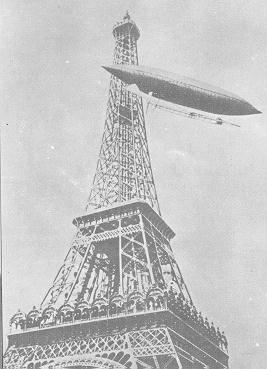

A Palerme (Sicile), le ciel se couvre d'un voile rouge et
une pluie sanglante se met à tomber en gouttes épaisses se
"coagulant" rapidement. M. Meunier analysera ces taches de sang qui, après évaporation, laisseront une poussière
extrêmement fine, rayant le verre, et dont les grains sont entourés de bulles d'air très adhérentes. Au
microscope, on aperçevra dans cette poussière des grains de quartz et des cristaux cubiques transparents de sel
marin ou de gypse, selon toute probabilité. Cette poussière contient également des corpuscules organiques,
principalement des végétaux. M. Meunier concluera de ces observations que la pluie de sang de Sicile n'est autre chose qu'une pluie de poussières
arrachées par le vent au sol du désert du Sahara Almanach Hachette 1902.
En Norvège par une nuit de pleine Lune, un objet rond argenté arrive du Sud-Est et passe
haut dans le ciel au-dessus des témoins, à la moitié de la vitesse d'un météore, ne laissant ni traînée ni
étincelles derrière lui. Il disparait à l'Ouest FSR, 1956-02.
Santos-Dumont fait voler son dirigeable n° 6 au-dessus de la tour Eiffel en Juillet

Dans le Golfe Persique, à bord du vapeur
Kilwa, le capitaine Hoseason scrute du regard la mer qui s'étend de toutes parts lorsque, soudain, il
voit de vastes ondulations lumineuses apparaître à la surface des eaux. Ces ondulations ont une faible
luminosité et s'éteignent 15 mn plus tard, après avoir évolué approximativement à 10 km/h.
(année approximative) A Cincinnati, le journal local
rapportera : Puis suivit un patter particulier, différent de la pluie ou de la grêle. Lorsque l'orage
s'abattu, les gens trouvèrent sur une hauteur de 3 pouces et couvrant une zone de plus de 4 pâtés de maisons,
une collection de la variété la plus saisissante de grenouilles. De petites grenouilles et crapauds de tous
types et descriptions. Si épaisse était cette consignment de ‘quackers' que dans certains endroits sur
les chemins piétons et dans les rues, se déplacer était impossible.
Alberto Santos-Dumont pilote son ballon dirigeable n° 6 autour de la tour
Eiffel, devant la foule. Long de 33 m et faisant 622 m cubes, l'appareil retourne à son point de départ après 29
mn 30 s.
Le prix Deustch de 50 000 FF est attribué à Alberto Santos-Dumont, institué par le
magnat du pétrole Henri Deutsch de La Meurthe, devant être délivré au premier homme qui, entre le 1900-05-01 et
le , volerait autour de la tour Eiffel, décollant et atterrissant sur le champ de
Saint-Cloud.
A Moriches (Long Island?), observation d'un ballon
mystérieux "Report Mysterious Airship", New York Times, 1901-12-10.
A Sart (Belgique) Une substance inhabituelle, sentant la colle tombe d'un ciel
clair UFO Roundup 4-36.
A Bournebrook (West Midlands, Angleterre), on voit une "hutte" atterrir dans un champ,
occupée par de petit hommes portant des casques de métal. La "hutte" s'éleve après dans le ciel Mysterious Britain.